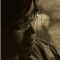
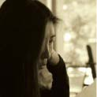
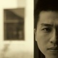
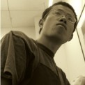

- 
- 
-
- 胡 飞
杭州之江画室主要负责人，毕业于中国美术学院教师。绘画作品多次留校并出版。2005年主编《中国美术院校素描考试摹本解析》，《新课标基础美术技法学习教材——素描静物》。
- 关 威
之江画室教学主管，毕业于中国美术学院版画系，现任教于中国美术学院职业技术学院,1997年以优异的成绩考入中国美术学院附中，2001年考入中国美术学院版画系。
- 郑 平
1986年出生于浙江台州，之江画室骨干教师，办公室主任，09年毕业于中国美术学院美术教育系
- 刘雪松
之江画室总务处主任，黑龙江哈尔滨人。曾就职于银行财务会计，银行副行长，北京大学分校总务主任，管理经验丰富。
- 毛 佩
1980出生于浙江舟山.毕业于中国美术学院附中，作品多次被留校，素描组长。
- 吴 正
现就读于中国美术学院油画系研究生第四工作室教师，色彩组长。
- 王 坚
1987年出生于浙江台州，之江画室骨干教师，色彩组副组长。
- 周 红
2005年考入中国美术学院雕塑系，现为杭州之江画室素描教师。素描组副组长。
- 高跃春
1浙江金华人，毕业于中国美术学院，美术作品油画《风景》入编《中国书画艺术博览》
- 梁拱照
现就读于杭州师范大学油画系研究生教师。
- 单文洁
2008年以第三名的优异成绩考入中国美术学院影视广告系，2012年考入中国美术学院影视广告系研究生。
- 潘远宁
之江画室骨干教师，毕业于中国美术学院版画系，1997年以优异的成绩考入中国美术学院附中，后毕业于中国美术学院版画系，
- 
-
new developments
教师风采
- 
请直接右键
【查看框架的源代码(chrome)】
【 此框架 > 查看框架源代码(FF)】
【不推荐使用ie浏览器】